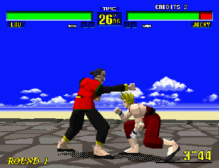
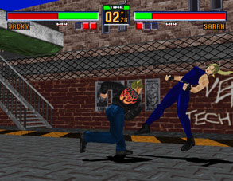
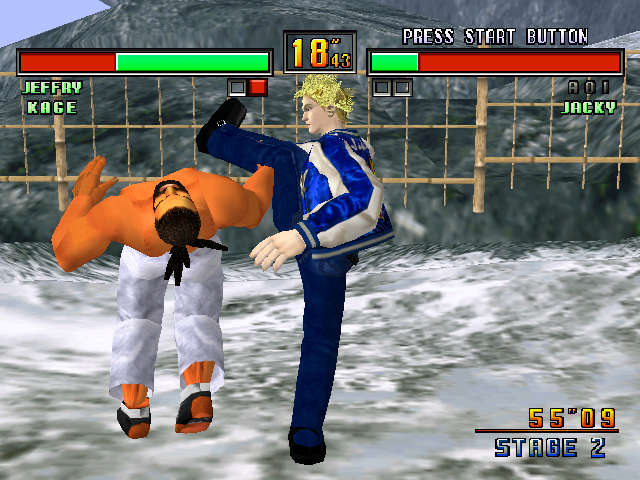

Virtua Fighter Series
Birth of the Series
 Virtua Fighter (I) came out in 1993 and was the first 3D fighter and one of the first 3D games made by SEGA. It operated by new control mechanics with 3 buttons: PUNCH, KICK, GUARD. Guard button was different from 2D fighters at the time that used BACK as a guard.
The game has 8 characters, with addition of Dural, 'boss'.
Three button mechanics allowed for more gameplay but more crucially 3D gameplay provided new 'feel' for the phisics of the game.
Virtua Fighter 2
 I 'discovered' Virtua Fighter series with Virtua Fighter 2 on Arcades in my youth. At the beginning we called the game 'square figures' or 'square men' as characters in VF1 and VF2 had less polygons than games today or even VF3, so they were shaped squarely.
Virtua Fighter 3
 We first encountered VF3 at "GXXXXXXXXXX", a local game expo. There was a line to the arcade to play for up to 30 meters, which could take 30-45 minutes to wait to play. The winner stayed on to play, but